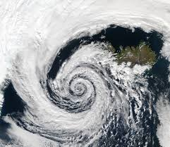

A NATURAL DISASTER is a major adverse event resulting from natural processes of the Earth; examples include floods, hurricanes, tornadoes, volcanic eruptions, earthquakes, tsunamis, storms, and other geologic processes. A natural disaster can cause loss of life or damage property, and typically leaves some economic damage in its wake, the severity of which depends on the affected population's resilience and on the infrastructure available.
An adverse event will not rise to the level of a disaster if it occurs in an area without vulnerable population. In a vulnerable area, however, such as Nepal during the 2015 earthquake, an adverse event can have disastrous consequences and leave lasting damage, which can take years to repair.
Earthquake
An earthquake (also known as a quake, tremor or temblor) is the shaking of the surface of the Earth resulting from a sudden release of energy in the Earth's lithosphere that creates seismic waves. Earthquakes can range in size from those that are so weak that they cannot be felt to those violent enough to propel objects and people into the air, and wreak destruction across entire cities. The seismicity, or seismic activity, of an area is the frequency, type, and size of earthquakes experienced over a period of time. The word tremor is also used for non-earthquake seismic rumbling.
At the Earth's surface, earthquakes manifest themselves by shaking and displacing or disrupting the ground. When the epicenter of a large earthquake is located offshore, the seabed may be displaced sufficiently to cause a tsunami. Earthquakes can also trigger landslides and occasionally, volcanic activity.
Earthquake in Turkey
Earthqake causes road damage
Earthquake causes building damage
In its most general sense, the word earthquake is used to describe any seismic event—whether natural or caused by humans—that generates seismic waves. Earthquakes are caused mostly by rupture of geological faults but also by other events such as volcanic activity, landslides, mine blasts, and nuclear tests. An earthquake's point of initial rupture is called its hypocenter or focus. The epicenter is the point at ground level directly above the hypocenter.
Tsunami
A tsunami is a series of waves in a water body caused by the displacement of a large volume of water, generally in an ocean or a large lake. Earthquakes, volcanic eruptions and other underwater explosions (including detonations, landslides, glacier calvings, meteorite impacts and other disturbances) above or below water all have the potential to generate a tsunami. Unlike normal ocean waves, which are generated by wind, or tides, which are generated by the gravitational pull of the Moon and the Sun, a tsunami is generated by the displacement of water.
Tsunamis generally consist of a series of waves, with periods ranging from minutes to hours, arriving in a so-called "wave train". Wave heights of tens of metres can be generated by large events. Although the impact of tsunamis is limited to coastal areas, their destructive power can be enormous, and they can affect entire ocean basins.
Tsunami in Japan 2011
Tsunami in Chennai 2008
Tsunamis are an often underestimated hazard in the Mediterranean Sea and parts of Europe. Of historical and current (with regard to risk assumptions) importance are the 1755 Lisbon earthquake and tsunami (which was caused by the Azores–Gibraltar Transform Fault), the 1783 Calabrian earthquakes, each causing several tens of thousands of deaths and the 1908 Messina earthquake and tsunami. The tsunami claimed more than 123,000 lives in Sicily and Calabria and is among the most deadly natural disasters in modern Europe. The Storegga Slide in the Norwegian Sea and some examples of tsunamis affecting the British Isles refer to landslide and meteotsunamis predominantly and less to earthquake-induced waves.
Cyclone
In meteorology, a cyclone is a large scale air mass that rotates around a strong center of low atmospheric pressure. Cyclones are characterized by inward spiraling winds that rotate about a zone of low pressure. The largest low-pressure systems are polar vortices and extratropical cyclones of the largest scale (the synoptic scale). Warm-core cyclones such as tropical cyclones and subtropical cyclones also lie within the synoptic scale. Mesocyclones, tornadoes, and dust devils lie within smaller mesoscale. Upper level cyclones can exist without the presence of a surface low, and can pinch off from the base of the tropical upper tropospheric trough during the summer months in the Northern Hemisphere. Cyclones have also been seen on extraterrestrial planets, such as Mars, Jupiter, and Neptune. Cyclogenesis is the process of cyclone formation and intensification. Extratropical cyclones begin as waves in large regions of enhanced mid-latitude temperature contrasts called baroclinic zones. These zones contract and form weather fronts as the cyclonic circulation closes and intensifies. Later in their life cycle, extratropical cyclones occlude as cold air masses undercut the warmer air and become cold core systems. A cyclone's track is guided over the course of its 2 to 6 day life cycle by the steering flow of the subtropical jet stream.

Cyclone's view from satellite
During cyclone
After Cyclone
Cyclone in Arabian Sea
Weather fronts mark the boundary between two masses of air of different temperature, humidity, and densities, and are associated with the most prominent meteorological phenomena. Strong cold fronts typically feature narrow bands of thunderstorms and severe weather, and may on occasion be preceded by squall lines or dry lines. Such fronts form west of the circulation center and generally move from west to east; warm fronts form east of the cyclone center and are usually preceded by stratiform precipitation and fog. Warm fronts move poleward ahead of the cyclone path. Occluded fronts form late in the cyclone life cycle near the center of the cyclone and often wrap around the storm center.
Volcanic Eruptions
Volcanic eruptions happen when lava and gas are discharged from a volcanic vent. The most common consequences of this are population movements as large numbers of people are often forced to flee the moving lava flow. Volcanic eruptions often cause temporary food shortages and volcanic ash landslides called Lahar.
The most dangerous type of volcanic eruption is referred to as a 'glowing avalanche'. This is when freshly erupted magma forms hot pyroclastic flow which have temperatures of up to 1,200 degrees. The pyroclastic flow is formed from rock fragments following a volcanic explosion , the flow surges down the flanks of the volcano at speeds of up to several hundred kilometres per hour, to distances often up to 10km and occasionally as far as 40 km from the original disaster site.
The International Federation response adjusts to meet the needs of each specific circumstance. As population movement is often a consequence, the provision of safe areas, shelter, water, food and health supplies are primordial. In general response prioritizes temporary shelter materials; safe water and basic sanitation; food supplies; and the short term provision of basic health services and supplies.
Valcano eruption in Krakatoa
The most common perception of a volcano is of a conical mountain, spewing lava and poisonous gases from a crater at its summit; however, this describes just one of the many types of volcano. The features of volcanoes are much more complicated and their structure and behavior depends on a number of factors. Some volcanoes have rugged peaks formed by lava domes rather than a summit crater while others have landscape features such as massive plateaus.
Tornado
A tornado is a violently rotating column of air that is in contact with both the surface of the Earth and a cumulonimbus cloud or, in rare cases, the base of a cumulus cloud. The windstorm is often referred to as a twister, whirlwind or cyclone, although the word cyclone is used in meteorology to name a weather system with a low-pressure area in the center around which, from an observer looking down toward the surface of the earth, winds blow counterclockwise in the Northern Hemisphere and clockwise in the Southern. Tornadoes come in many shapes and sizes, and they are often visible in the form of a condensation funnel originating from the base of a cumulonimbus cloud, with a cloud of rotating debris and dust beneath it.
Tornadoes
Tornado in Madill Oklahoma Town
Various types of tornadoes include the multiple vortex tornado, landspout, and waterspout. Waterspouts are characterized by a spiraling funnel-shaped wind current, connecting to a large cumulus or cumulonimbus cloud. They are generally classified as non-supercellular tornadoes that develop over bodies of water, but there is disagreement over whether to classify them as true tornadoes. These spiraling columns of air frequently develop in tropical areas close to the equator and are less common at high latitudes.[6] Other tornado-like phenomena that exist in nature include the gustnado, dust devil, fire whirl, and steam devil.